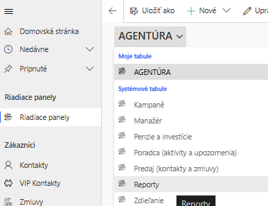
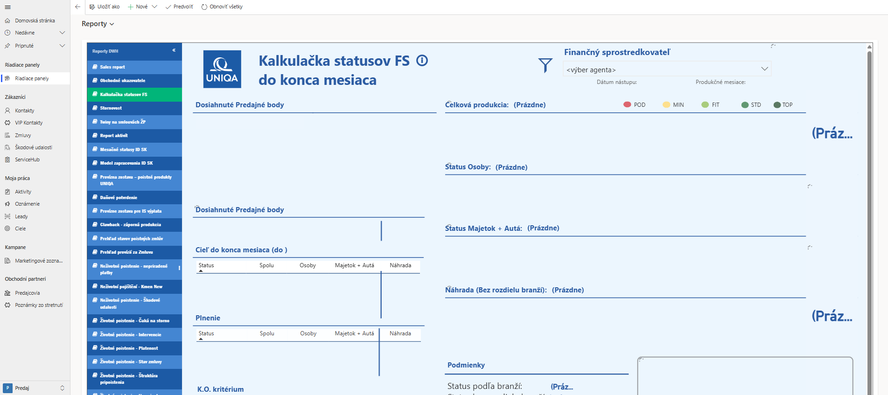

Zdroj: interné materiály UNIQA („Model zapracovania 2026", „Štandardy 2026")
Model zapracovania (MZ) pozostáva z vyplácania dodatkovej provízie (DP) na základe splnenia stanovených kritérií. MZ začína 0. mesiacom (spravidla mesiac nástupu) a pokračuje 1. až 24. mesiacom.
| Život | CP | D&B | SME | Corpo | Auto | Tempo | II. pilier | III. pilier |
|---|---|---|---|---|---|---|---|---|
| 2,5 | 1 | 3 | 1,5 | 1,5 | 0,5 | 0,5 | 0,5 | 0,5 |
| Mesiac MZ | Podmienky na vyplatenie DP | DP v EUR |
|---|---|---|
| 0. | Registrácia v NBS, e-learning, základné školenia (Prvé kroky, Úvod do predaja, IT, Autá), 100 kontaktov v CRM+, min. 15 ks ponúk (Život, Autá, Majetok) | 500 €* |
| 1. – 6. | Mesačná produkcia min. 1 200 PB | 500 € |
| Mesačná produkcia min. 2 400 PB | 750 € | |
| Mesačná produkcia min. 3 600 PB | 1 000 € | |
| 7. – 12. | Priebežný status UNIQA FIT | 500 € |
| Priebežný status UNIQA STD | 750 € | |
| Priebežný status UNIQA TOP | 1 000 € | |
| 13. – 24. | Priebežný status UNIQA FIT | 300 € |
| Priebežný status UNIQA STD | 500 € | |
| Priebežný status UNIQA TOP | 700 € |
* RID SR môže rozhodnúť o nevyplatení DP za 0. mesiac bez náhrady, ak neabsolvuješ osobitné finančné vzdelávanie (SDS, DDS, kapitálový trh) do konca 0. mesiaca.
| Status | PB spolu | z toho osoby | z toho neživotné | PB bez rozdielu branží | Produkčný bonus |
|---|---|---|---|---|---|
| UNIQA TOP | 53 340 | 17 820 | 13 380 | 89 220 | 15 % |
| UNIQA STD | 35 520 | 13 320 | 9 840 | 60 960 | 10 % |
| UNIQA FIT | 19 980 | 8 880 | 6 660 | 30 900 | 5 % |
| UNIQA MIN (aktívny) | 9 000 | — | — | — | krátenie následných provízií o 30 % |
| UNIQA POD (pasívny) | menej ako 9 000 | — | — | — | krátenie všetkých provízií o 30 % |
Podmienky sú splnené buď všetky súčasne (PB spolu + z toho osoby + z toho neživotné), alebo iba PB bez rozdielu branží. Pre FIT/STD/TOP je navyše potrebné min. 1 ks zmluvy DDS alebo SDS za mesiac — inak zníženie statusu o jeden stupeň. Benefity: TOP a FIT — tablet/signpad + POS software; STD — účasť v ročnej súťaži o zájazd.

